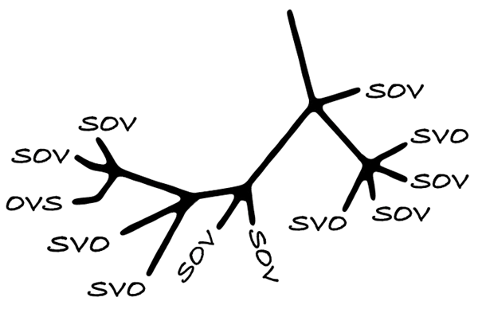
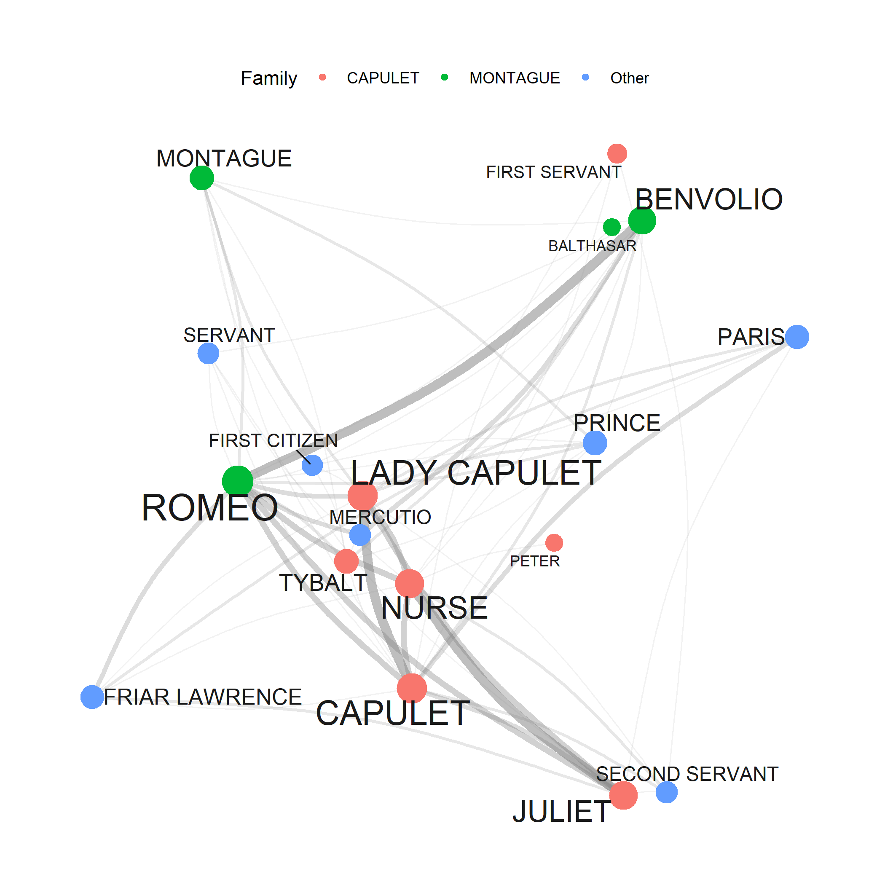

TUTORIALS

This page presents the tutorials provided by LADAL. To access a tutorial, click on its title, and you will be directed to the respective website.
Data Science Basics
This tutorial provides advice and general tips on how to keep your computer clean and running smoothly, how to organize files and folders, and how to store your data safely and orderly.
Data Management and Reproducibility
This tutorial introduces basic data management techniques, version control measures, and issues relating to reproducible research.
Introduction to Quantitative Reasoning
This tutorial takes a philosophical or history-of-ideas approach and introduces the logical and cognitive underpinnings of the the scientific method.
Basic Concepts in Quantitative Research
This tutorial introduces basic concepts of data analysis and quantitative research.
R Basics
This site provides our reasoning for focusing (almost exclusively) on R in LADAL.
This tutorial shows how to get started with R and it specifically focuses on R for analyzing language data but it offers valuable information for anyone who wants to get started with R.
This tutorial shows how you can load and save different types of data when working with R.
This tutorial introduces string processing and this can be used when working with language data.
This tutorial introduces regular expressions and how they can be used when working with language data.
This tutorial shows how to work with tables and how to tabulate data in R.
Data Visualization
This tutorial introduces data visualization using R and shows how to modify different types of visualizations in the ggplot framework in R.
This tutorial introduces different types of data visualization and how to prepare your data for different plot types.
Introduction to Geospatial Data Visualization
This tutorial introduces geo-spatial data visualization in R.
This tutorial shows how to generate interactive data visualizations in R.
Statistics
This tutorial focuses on how to describe and summarize data in R.
This tutorial introduces basic inferential procedures for null-hypothesis hypothesis testing.
This tutorial introduces regression analyses (also called regression modeling) using R. Regression models are among the most widely used quantitative methods in the language sciences to assess if and how predictors (variables or interactions between variables) correlate with a certain response.
This tutorial focuses on tree-based models and their implementation in R.
Cluster and Correspondence Analysis
This tutorial introduces classification and clustering using R. Cluster analyses fall within the domain of classification methods which are used to find groups or patterns in data or to predict group membership.

Introduction to Lexical Similarity
This tutorial introduces Text Similarity, i.e. how close or similar two pieces of text are with respect to either their use of words or characters (lexical similarity) or in terms of meaning (semantic similarity).
This tutorial introduces Semantic Vector Space (SVM) modeling R. SVMs are used to find groups or patterns in data or to predict group membership.
This tutorial introduces selected dimension reduction methods (Principal Component Analysis, Factor Analysis, and Multidimensional Scaling) which allow to detect and evaluate structures, called components, latent variables, or factors, underlying observed variables.
This tutorial introduces power analysis using R. Power analysis is a method primarily used to determine the appropriate sample size for empirical studies.
Text Analytics
This tutorial introduces Text Analysis, i.e. computer-based analysis of language data or the (semi-)automated extraction of information from text.
Practical Overview of Selected Text Analytics Methods
This tutorial showcases some basic but useful methods for text analysis and serves as a practical overview or introduction to Text analytics and distant reading.
Concordancing (keywords-in-context)
This tutorial introduces how to find words or phrases in text and display concordances, a so-called keyword-in-context (KWIC) display, with R.
Collocation and N-gram Analysis
This tutorial introduces collocation analysis and identifying N-grams with R and shows how to extract and visualize semantic links between words.
This tutorial introduces keyness analysis and identifying keywords with R and shows how to visualize keywords.

This tutorial introduces network analysis using R. Network analysis is a method for visualization that can be used to represent various types of data.
This tutorial introduces topic modeling using R.
This tutorial introduces sentiment analysis (SA) and shows how to perform a SA in R.
This tutorial introduces part-of-speech tagging and syntactic parsing using R.
This tutorial shows how to summarize texts automatically using R by extracting the most prototypical sentences.
This tutorial shows how to implement and use spell checking in R when working with text data.
Case Studies
This tutorial shows how to perform document classification using R. It was created by Gerold Schneider and Max Lauber for the Australian Text Analytics Platform (ATAP).
This section presents different case studies or use cases that highlight how to do corpus-based analyses by implementing procedures shown in other LADAL tutorials.
Analyzing learner language using R
This tutorial focuses on learner language and how to analyze differences between learners and L1 speakers of English using R.
Lexicography and Creating Dictionaries with R
This tutorial introduces lexicography with R and shows how to use R to create dictionaries and find synonyms through determining semantic similarity in R.
Visualizing and Analyzing Questionnaire and Survey Data
This tutorial offers some advice on what to consider when creating surveys and questionnaires, provides tips on visualizing survey data, and exemplifies how survey and questionnaire data can be analyzed.
This tutorial exemplifies how to create a vowel chart with Praat and R.
Computational Literary Stylistics with R
This tutorial focuses on computational literary stylistics (also digital literary stylistics) and shows how fictional texts can be analyzed by using computational means.
Practical phylogenetic methods for linguistic typology
This tutorial shows how you can do phylogenetic analysis in R.
Reinforcement Learning and Text Summarization in R
This tutorial introduces the concept of Reinforcement Learning (RL), and how it can be applied in the domain of Natural Language Processing (NLP) and linguistics.
How-Tos

This tutorial shows how to extract text from one or more pdf-files using optical character recognition (OCR) and then saving the text(s) in txt-files on your computer.
Downloading Texts from Project Gutenberg
This tutorial shows how to download and clean works from the Project Gutenberg archive using R. Project Gutenberg is a data base which contains roughly 60,000 texts for which the US copyright has expired.
This tutorial shows how to crawl and download web data using R, including link following and text extraction.